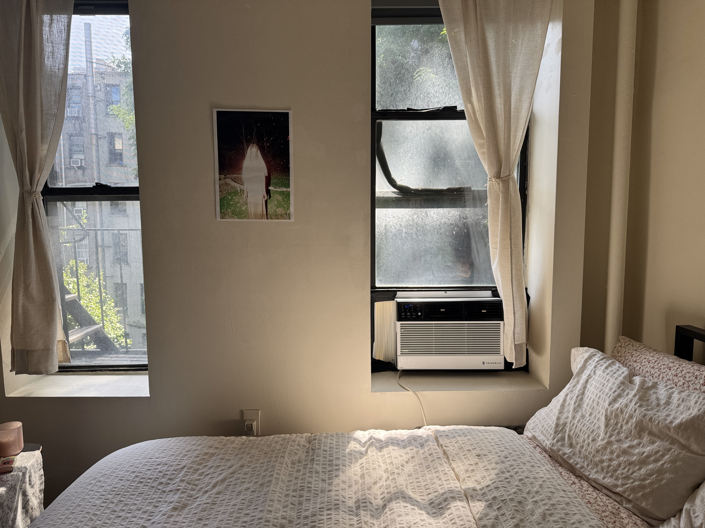
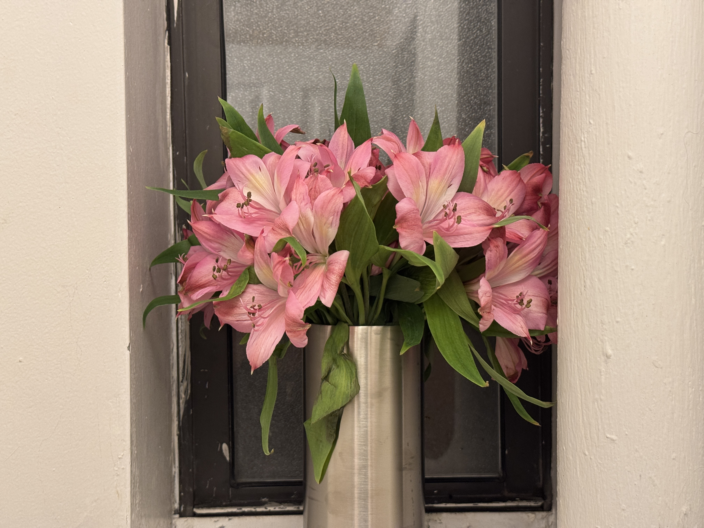

✦ ˑ ִֶָ 𓂃⊹ a sense of home ✦ ˑ ִֶָ 𓂃⊹


My Studio Apartment — NYC My first solo apartment. It's been a dream of mine since fifth grade to be living on my own in New York City.
Brooklyn Heights — NYC Isaac and I got dinner in Brooklyn Heights in late spring, and the sunset was perfect. I saw a glimpse of my future (hopefully) in this neighborhood.
Valentine's Party — LA Valentine's house is the best for hosting. Karaoke with puppets is always a must.


The Arroyo The Arroyo Seco Canyon is a historic 24-mile watershed that runs throughout Pasadena. Once I learned how to drive, going down the winding roads that wrap the valley became a daily routine for me. I miss summer walks down the trails and spring picnics with friends.
The Sheep — Bryn Mawr Saying hi to the sheep in Bryn Mawr is a non-negotiable. Dalia and I made some friends this time, too.
Valentine's House — LA Red light photoshoot! One of our many experimental hangouts.
Secret Spot — LA Early summer 2026 consisted of many drives along the coast of Palos Verdes. Dalia and I discovered this hidden picnic spot overlooking the water.


My Bedroom Window My view of my neighbor's house throughout the different seasons.
The 405 — LA We found a beautiful overlook across the Getty over winter break. It's a new go-to spot now.


Red Dress A red dress hanging to dry in my neighbor's window.